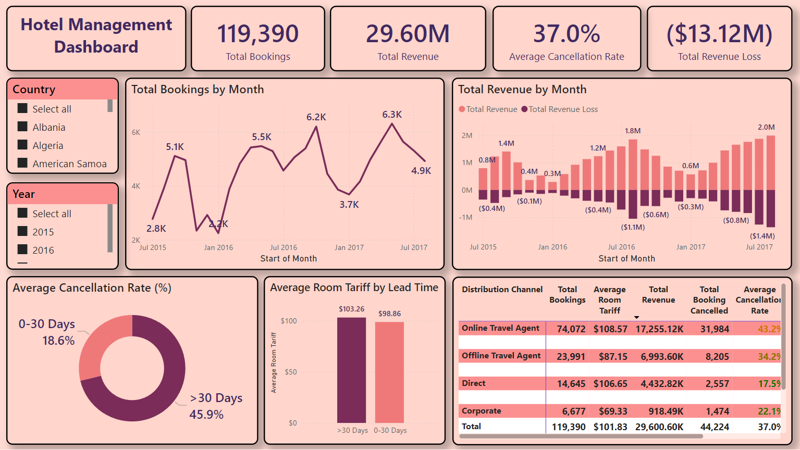

Hotel Management Dashboard
This dashboard tracks hotel performance with key metrics like bookings, revenue, and cancellation rates, broken down by month, country, year, and lead time.
By leveraging my Business Driven Mindset, I help businesses unlock growth by blending data-driven insights with actionable marketing strategies. Here’s what sets me apart: I’m not just crunching data in spreadsheets 📊 or building dashboards; I’m relentlessly asking, “How does this boost revenue?” 💰 or “What’s the story behind these trends?” 📖
For example, by analyzing market trends, I uncovered market trends that boosted sales of one of my brands by 73.7% in a year! 📈 (yes, you read that right! 🎯) I’m the guy who can geek out over a killer dashboard 🤓 and then explain it to your CEO in plain English. Think of me as your Translator 🌉 or Advisor 🔍; where my job is to bridge the gap between complex data and real-world results, helping you boost revenue, loyalty, and growth.
Ready to turn your “what-ifs” into “here’s how”? Let’s have a chat! ☕️🤝

This dashboard tracks hotel performance with key metrics like bookings, revenue, and cancellation rates, broken down by month, country, year, and lead time.
This transportation dashboard displays key metrics like revenue, ticket sales, and on-time percentage, broken down by time, date, and hour, providing insights into operational performance and peak travel times.
This dashboard analyzes customer retention and churn over time using a cohort analysis. It tracks new customers monthly and visualizes their activity through retention and churn rates, as well as overall active customer numbers.
This is an Adventure Works Sales Dashboard showcasing key performance indicators like turnover, quantity sold, profit, and returns. It breaks down sales by month, product category, and country, highlighting top-performing products and overall sales trends.
This is an Ecommerce Sales Dashboard tracking key metrics like units sold, revenue, refunds, and sponsor costs. It provides insights into hourly sales performance, top-selling products, and monthly revenue trends, allowing for quick analysis of sales performance and identification of key drivers.
This Data Professionals Survey Dashboard presents key findings from 630 respondents, including average age, salary by job type, and happiness with work-life balance and salary. It also shows the distribution of respondents by country, gender, and favorite programming language, providing a snapshot of the data professional landscape.
Bank customer segmentation involves dividing a bank's customer base into distinct groups based on shared characteristics like demographics, behavior, and financial needs. This allows the bank to tailor products, services, and marketing strategies to each segment, improving customer satisfaction and profitability.
"Data cleaning in Pandas" refers to the process of identifying and correcting errors, inconsistencies, and inaccuracies in a dataset using the Python library Pandas. This involves tasks such as handling missing values, removing duplicates, correcting data types, and standardizing data formats to ensure data quality and prepare it for analysis.
"Exploratory Data Analysis (EDA) in Pandas" involves using the Pandas library to investigate and summarize datasets. This includes tasks like examining data distributions, identifying patterns and relationships, and generating visualizations to gain insights and formulate hypotheses before formal modeling.
Polynomial Regression & Regularization Methods refer to statistical techniques used to model non-linear relationships and prevent overfitting in regression analysis. Polynomial regression extends linear regression by adding polynomial terms of the predictors.
Cohort Analysis involves grouping users based on shared characteristics (like signup month) and tracking their behavior over time. This helps understand customer retention, engagement, and the long-term impact of changes to products or marketing.
Pizza store data analysis involves examining sales, customer, and operational data to improve business performance. This includes analyzing popular pizza types, peak order times, and delivery efficiency.

RFM segmentation categorizes customers based on Recency, Frequency, and Monetary value, helping businesses tailor marketing strategies for increased loyalty and revenue.